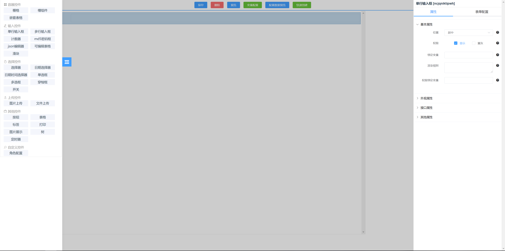
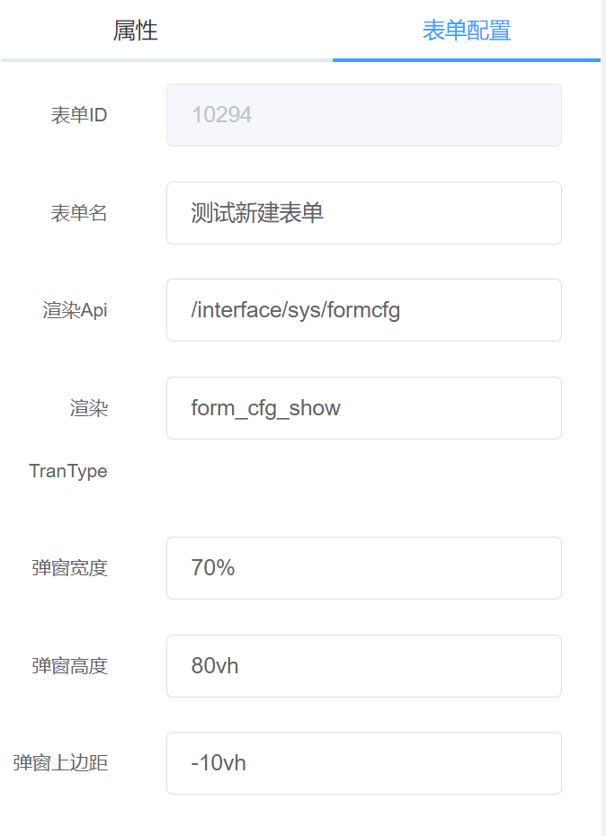

界面介绍

顶部导航条
保存按钮
用于保存当前的表单配置，配置完表单后要及时保存，否则刷新页面会丢失配置信息。
删除按钮
选中设计面板的组件后，点击删除按钮可以删除组件，删除后也需保存才会永久生效。
预览按钮
保存配置后点击预览可以预览表单。
变量配置
可以配置表单中用到的一些变量，供表单渲染时解析使用。详细配置见 变量配置
配置数据预览
可以看到当前表单的完整配置信息(JSON)。
快速创建
可以快速创建表格。详细介绍见 快速创建
左侧组件面板
组件面板包含了表单配置中所有可用到的组件，可点击组件拖动到中间的设计面板实现界面布局。详细介绍见 组件介绍
设计面板
用于预览布局效果，可在此面板拖动组件实现布局调整。
属性面板
属性面板包括组件属性和表单属性。
组件属性
在设计面板点击组件后，可以在右侧属性面板看到组件相关的属性。可通过配置不同属性实现业务功能。
表单属性

其中渲染 Api 和渲染 TranType 为初始化表单时的解析接口，不需要自定义时默认即可。弹窗宽度、弹窗高度、弹窗上边距用于控制弹窗布局（当表单以弹窗形式展示时生效）。